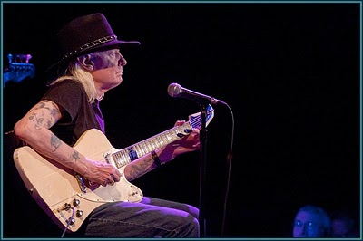
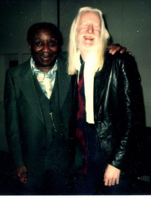
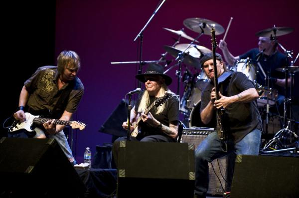

|
У Джонни Уинтера выходит автобиографическая книга, и он подписал контракт на запись нового альбома. В связи с этим, неразговорчивый Уинтер 21 апреля 2010 г. дал по телефону это интервью Монике Яшер (Monica Yasher). То, что вопросы длиннее его ответов - вполне в характере Уинтера.  Мистер Джонни Уинтер не только человек с гитарой. Ему есть, о чем рассказать. 1 мая у него выходит книга под названием "Взбунтовавшийся Каин: Дикая и бурная история Джонни Уинтера". Джонни подписал контракт с Megaforce records и скоро начнет работу над долгожданной студийной записью. И него напряженный гастрольный график. И огромная любовь к музыке. Когда я попросила о встрече с м-ром Уинтером, мне сказали, что я могу спрашивать его о чем угодно. И хотя он не является самым разговорчивым человеком в мире, он открыт для любых вопросов. И он воистину является одним из прекрасных джентльменов Юга. Думаю, главное, что необходимо для понимания м-ра Уинтера - это его истовая любовь к музыке. В это его суть с тех времен, как он впервые взял в руки гитару. Его родители поняли, что блюзовая музыка была необходима Джонни. И во времена расовой напряженности они поддерживали его частые походы в "черные" клубы, потому что только там Джонни мог утолить свой музыкальный голод лучшим, что было в блюзе, когда он жил в маленьком техасском городки. Это его любовь к музыке, которая привела его к таким титанам, как Мадди Уотерс. Поэтому для Джонни было важно вновь поднять этот жанр, который помогал создавать сам Мадди Уотерс. И поэтому он воспринимает Мадди как героя блюза. Когда я спросила Джонни, была ли музыка для него благословлением или проклятием, он ответил со всей уверенностью, "благословением!" Да, это благословение для всех нас, что у м-ра Джонни есть блюз. И это никого не может огорчить. М: Джонни, как я понимаю, ваши мать и отец очень поддерживали ваш интерес к музыке. Я понимаю, что вы жили во времена расовой напряженности, и, я так понимаю, что вы многому научились в походах по "черным" блюзовым клубам. J: Oh yeah. M: Что я нигде не нашла среди написанного вас, это то, как ваши родители относились к вашему выбору именно этого направления и учебе именно у этих музыкантов. J: Они нисколько не возражали. Первым человеком, у которого я по-настоящему чему-то научился, был ди-джей и гитарист по имени Кларенс Гарлоу (Clarence Garlow), который руководил "KJET", первой "черной" радиостанцией в Бимонте. M: А почему вы считали, что в то время вы можете научиться у черных музыкантов больше, чем у белых? Кем вы тогда хотели быть больше всего? J: Они были теми, кто играл блюз! Это было именно то, чему я хотел научиться. M: Вы отправились к самым корням? J: Oh Yeah. M: Для вас музыка была вершиной, которую нужно покорить, или она всегда была чем-то естественным? J: Она всегда была развлечением. Я всегда ее любил. M: Было это когда-нибудь трудно? Вам приходился с собой бороться? Или вы считали ее просто природным даром. J: Ну почему? Я думаю, она была… определенно… даром. M: Когда вы выступали в таких клубах, это считалось Chitlin' Circuit (сеть концертных площадок на Западе и Юге США, доступных афро-американским артистам)? J: Думаю, да. Не припомню, чтобы это называлось именно так, но думаю, так это было. M: Тогда это так не называлось? J: Нет, я никогда не слыхал про Chitlin' Circuit. M: Неужели? Когда я интервьюировала Бобби Раша, я узнала о Chitlin' Circuit. Пытаюсь больше узнать об этом. J: Первый блюз я сыграл в Бимонте, моем родном городе. M: Городок, кажется, был хорошим место для роста! Сегодня музыкальный рынок кажется трудным, и мне кажется, что вы не очень принимаете современную музыку. На вашем Ipod много старых песен? J: Oh yeah. Современная музыка меня не волнует. M: Вам приходилось пересматривать свою музыку, чтобы она звучала по-новому? Чтобы удержать слушателей? J: Я не пытаюсь сделать ее соответствующей сегодняшнему дню. Я просто играю то, что мне нравится. Я надеюсь, что и другим людям она может понравиться! M: Каждый раз, когда вы работаете над новым альбомом… Я слышала от многих музыкантов, с кем я разговаривала, что их фанаты не хотят слышать новые вещи. Они хотят слушать старые. Вы тоже так считаете? J: Oh Yeah. M: Как артиста, вас не печалит, что не хотят слушать ваши новые работы? J: Yeah. M: Джонни, я знаю, что в Мадди Уотерсе вы обрели себе друга.  J: О, да. Очень хорошего друга.M: Я знаю, что во времена 70-х и 80-х годов, многие рок-звезды помогали вернуть славу представителям старшего поколения блюзовых музыкантов. А как это было у вас? Вы чувствовали ответственность за то, чтобы вновь привлечь внимание любителей рока к Мадди? J: Я хотел, чтобы Мадди был таким, каким он был когда-то в 50-х. Я знал, что он записал нечто вроде "Electric Mud", которую я тогда просто ненавидел, но я знал, что он был великим артистом. Я просто хотел, чтобы он оставался таким, каким был всегда. M: Я читала, что, когда вы продюсировали его записи, ты точно знал, как бы ты хотел, чтобы он звучал тогда. Почему? Почему вы хотели уловить это звучание и сохранить его подлинность и таким представить его новым слушателям? J: Это была та музыка, которую я люблю. Я знал, что Мадди был великим. И мог снова стать таким. M: Вы думали о том, что если бы вы не встретились с Мадди, ваше звучание было бы таким, как сегодня? J: Вероятно, нет. M: А как вы думаете, вы бы "звучали"? J: Я уверен, я был играл примерно то же. Но игра с Мадди определенно во многом помогла. M: Какой из советов Мадди был самым лучшим и полезным. J: Мы не очень много говорили… На самом деле он мне вообще советов не давал. Я в общем-то многое знал о его музыке по его записям. Нет, по настоящему он не дал мне ни одного совета. M: Нет? Какое из ваших воспоминаний о нем - лучшее? J: Думаю, те,когда я приходил к нему домой, и он готовил для меня gumbo (блюдо луизианской кухни - иногда густой суп, иногда наваристая подлива). M: Готовил для вас гамбо? J: Yeah. Это вот прекрасные воспоминания. M: У вас сохранился рецепт? J: Нет, нету. M: Я читала историю о БиБиКинге в Бимонтском клубе. Он не испугался дать вам гитару. Но когда вы поднялись на сцену, это было чудесно. J: БиБи не знал меня вовсе. Я был 17-летним пареньком. И мы (с друзьями) были единственными белыми в клубе. Я очень хотел выйти на сцену и сыграть, я едва мог усидеть на месте. (Джонни рассмеялся). Тут он попросил меня показать мою профсоюзную карточку. И я ее предъявил. Я сказал: "Я слышал множество ваших пластинок". Он заподозрил, что мы из налогового управления, чтобы предъявить ему счет, или что-то в этом роде. (Мы рассмеялись). M: Неужели? J: Он не хотел пускать меня поиграть, поскольку никогда обо мне не слышал. M: Налоговое? У вас тогда не было длинных волос? J: Нет-нет. M: Он вспоминает эту историю? J: Она уже много раз опубликована. M: Прекрасно, а ваше знакомство с тех пор окрепло? J: Oh Yeah. Это было нечто! M: Очевидно, БиБиКинг тронул вас в тот вечер. Я хочу поделиться историей от человека, с которым я разговаривала, по имени Гарри Мэнкс (Harry Manx). В этом году Гарри получил титул от канадского блюзового общества "Кленовые награды" как "Лучший исполнитель в акустике" (Canadian Maple Awards Acoustic Act of the Year). Я спросила его, как началась его блюзовая карьера, он ответил, что, когда ему было тринадцать, он пошел в магазин грампластинок, он увидел пластинку с великолепной обложкой, на которой была сияющая гитара. (Джонни рассмеялся). M: Он посчитал это поразительным, и решил обязательно приобрести этот альбом. Вы стали его первооткрывателем блюза. J: Это замечательно! А кто это? M: Его зовут Гарри Мэнкс. Никогда о нем не слышали? J: Кажется, слышал. M: Итак, мой вопрос. Как БиБиКинг помог вам в начале, знаете ли вы о ком-то, кого вы тронули блюзом? J: Многие люди мне так говорили, что я оказал на них влияние. И это очень приятное ощущение. M: Давайте поговорим о сочинении песен. Я знаю, что многие с вами говорили о гитарном мастерстве, но никогда о ваших песнях. Как вы подходите к началу сочинения песни? J: Обычно я сначала пишу слова, потом подбираю к ним музыку. M: Есть записная книжка для идей? J: Oh.. yeah, конечно… Определенно есть! M: Во время гастролей часто сочиняете? J: Нет. Я некоторое время не писал… Несколько лет M: Несколько лет? То есть, прямо сейчас ее нет? J: Yeah. Я не чувствую особого вдохновения к сочинительству. Но я собираюсь к этому вернуться. M: было бы здорово услышать ваши новые песни. Давайте перейдем к вашим гитарам. Мне любопытно. У вас сохранилась ваша первая гитара? J: Не самая моя первая гитара. Это было таааак давно. M: Сколько у вас сейчас гитар, как вы думаете? J: У меня примерно семь Firebirds, и пять или шесть Level National Guitars, три или четыре Lazers. M: Firebird -ваши любимые? J: Любимые - The Razers. На Firebird я предпочитаю играть слайдом. M: Johnny, когда вы играете на сцене, о чем вы думаете? О работе пальцев, об ощущении песни, что занимает ваши мысли? J: Только то, что я делаю. M: Больше о технике? J: Только ЧТО Я ИГРАЮ. M: Я читала, вы постоянно меняете список исполняемых песен. Что вдохновляет вас или каким правилам вы следуете, составляя список песен для исполнения? J: Мы меняем в списке только несколько песен. Обычно три, или четыре. M: Вы еще экспериментируете с гитарным звуком, с усилителями, или с самой гитарой? Или вы с этим закончили? J: Нет, я особенно не экспериментирую. Я довольно хорошо знаю, что я хочу. M: Будь такая возможность, каков был бы блюзбэнд вашей мечты сегодня? J: Сегодня? M: Да, сегодня. J: Derek Trucks, Sonny Landreth, Watermelon Slim, и Magic Slim and the Teardrops. M: Это было бы замечательно! M: Что вы думаете о сегодняшней музыкальной сцене Техаса? J: меня она не слишком заботит. M: Вообще? J: Да, я не интересуюсь. M: почему так? J: Есть еще несколько хороших людей. Но в целом она не особо радует. M: А какой бы вам хотелось, что бы она была? Что по вашему должно происходить? J: Я бы больше блюза вернул в эту музыку! (He chuckled) M: Так вас не очень интересует знаменитый Техасский блюз прямо сейчас? J: Ну, я ненавижу рэп. Я ненавижу хип-хоп. Я просто терпеть не могу такие вещи. M: вы не оглядываетесь назад, назад, на свои прошлые работы, вам не хотелось бы теперь сделать что-то лучше, или по-другому? J: Oh yeah. M: Что вас больше всего огорчает, или что больше нравится? J: Было у меня достаточно хорошего. Мне нравится очень 'Dallas'. Мне нравится 'Stranger'. Мне нравится 'TV Mama'. M: Мне они тоже нравятся. Я вижу, у вас вышло на ДВД пособие по игре на гитаре. J: ну, конечно же! M: есть ли у вас совет для тех читателей, которые пытаются сделать то, что делали вы? Какой был ваш главный совет для них? J: Слушать как можно больше музыки, и играть как можно больше. M: Блюзовой музыки? J: Определенно да. M: Давайте поговорим о вашей книге, которая выходит через несколько недель. J: О… конечно. M: Это было трудным испытанием, или наоборот воодушевляющим делом? J: Я с наслаждением рассказываю о себе. M: Неужели? (мы рассмеялись) J: Yeah. Правда, да. Мне было приятно работать над этой книгой. M: и каково ваше мнение о результате? J: Мне нравится эта книга, она вышла отличной! Я очень счастлив тем, что получилось. M: Я специально послушала и почитала про вас перед этой встречей. Я прочитала, что вас многое огорчало в жизни… И это послужило причиной проблем с алкоголем и наркотиками. Вы сказали, что все в жизни не так, это прозвучало, словно с вами произошло нечто ужасное. Но потом что-то произошло в вашей жизни… Что вы решили, надо что-то с этим делать! Что вас подвигло обратиться за помощью и пройти лечение? J: Как только я понял, что уже не могу функционировать без этого… Мне просто стали необходимы эти вещи. Пока я чувствовал, что я просто пользуюсь ими, все шло нормально. Но когда обнаружилось, что уже они пользуются мной, я решил это прекратить. M: Поздравляю, что вы это преодолели. J: Well, thank you. M: Поздравляю. Не хочу прощаться с вами на разговоре о плохом… В какой момент жизни вы поняли, что вы действительно хорошо играете на гитаре? Что вы можете зарабатывать этим на жизнь. В какой момент вы сказали "Ага!", что подсказало вам, что именно этим вам нужно заниматься? J: Я думаю, когда я играл вместе с Мадди. Это было для меня самым большим удовольствием! M: Какие у вас были отношения с Джэнис Джоплин? Я знаю из прочитанного в книге, что у вас было к Джэнис какое-то особенное отношение. Что вы мне можете рассказать о Джэнис? J: Она попросила меня сходить с ней на но новый фильм Мэй Уэст (Mae West). Я, конечно, согласился. И мы пошли в кинотеатр. Мы вошли, и люди начали аплодировать. Мы подумали, что это нас приветствуют, но потом оказалось, что просто мы вошли одновременно с Мэй Уэст! (Мы рассмеялись). M: Музыка поднимала вас к высоким вершинам, но, похоже, она же и была причиной глубоких падений. Так как вы считаете, музыка была благословением или проклятием в вашей жизни? J: Она всегда будет в моей жизни благословением - в этом нет никаких сомнений. Определенно, Благословением! M: И чему вы обязаны вашими успехами? J: Тяжелой работе! И еще тому, что я просто умел это хорошо делать! M: вы считаете, что финансовая, деловая сторона музыки так же важна, как наличие таланта и стремления? Что вы думаете об этом? J: Мне не нравится деловая сторона. Я рад, что мне не приходится заботиться об этом. У меня есть хороший менеджер, который делает это вместо меня. M: Как вы познакомились с вашим менеджером? J: Я записывал пластинку, а Пол оказался в той же студии. Мы лучше узнали друг друга там. M: Это Пол нельсон, да (Paul Nelson)? Я читала, что он снимался в фильме. J: Нет. Он не актер. M: Мне казалось, он участвовал в фильме с Бет Мидлер (Bette Midler). Думаю, неверная информация оттуда. Один последний вопрос, кого вы могли бы поблагодарить за свою карьеру? Ваших родителей, Мадди, вашу жену? Кто бы это был? J: Наверное, моего прадеда. Он меня подтолкнул в самом начале. Он купил мне первую гитару. Он заставил меня петь. Он очень помогал. M: Он видел ваши первые профессиональные выступления? J: Нет, он умер до. Ему было 96 лет, когда он умер. M: Сочувствую, Джонни… Есть ли что-то, чтобы вы хотели мне сказать в конце интервью? J: Мне кажется, нет. Я думаю, вы очень хорошо поработали. M: Спасибо. Мне было очень приятно поговорить с вами. Я желаю вам всего наилучшего, пусть ваша карьера продолжает развиваться и двигаться вперед. Спасибо за вашу музыку и игру на гитаре. J: Ну, спасибо вам! M: Всего доброго, спасибо за интервью. J: Bye.
 Когда он вешал трубку, я услышала, как от усмехнулся и сказал кому-то: "Она считает, ты, типа, кинозвезда!" Ну и ладно. У человека, которому выпало так много блюза, должен быть повод посмеяться иногда. Пусть даже и на мой счет. |